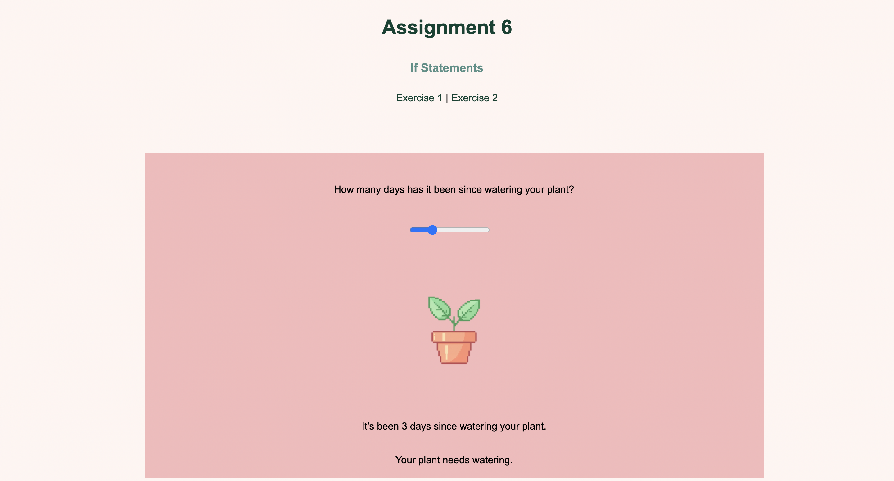
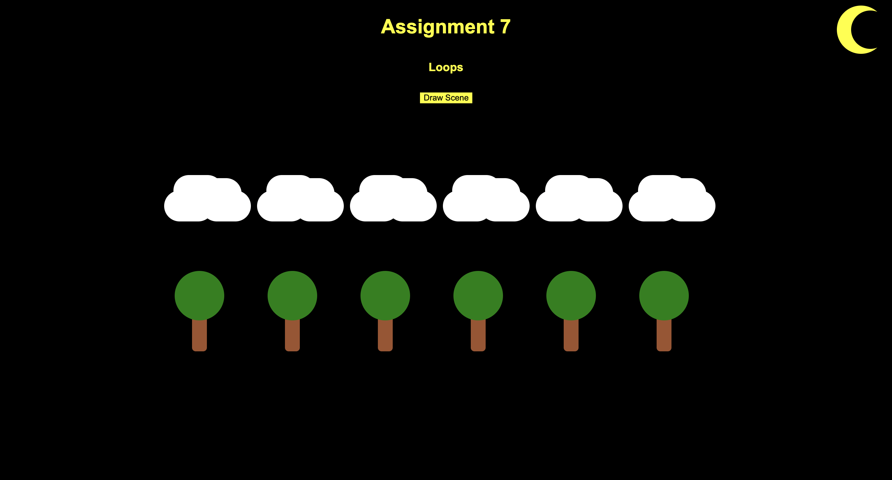
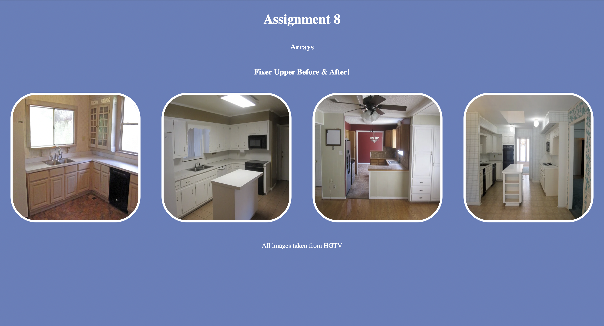
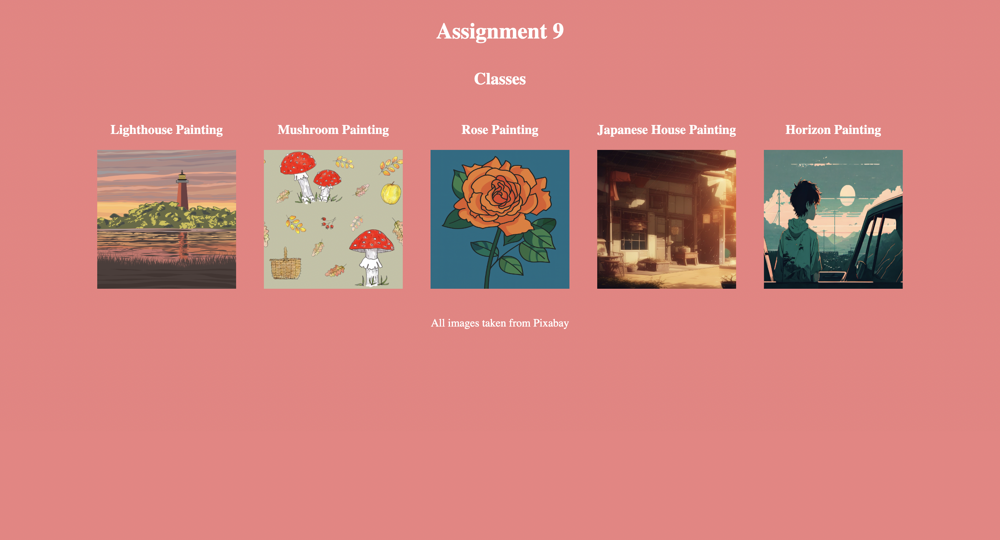
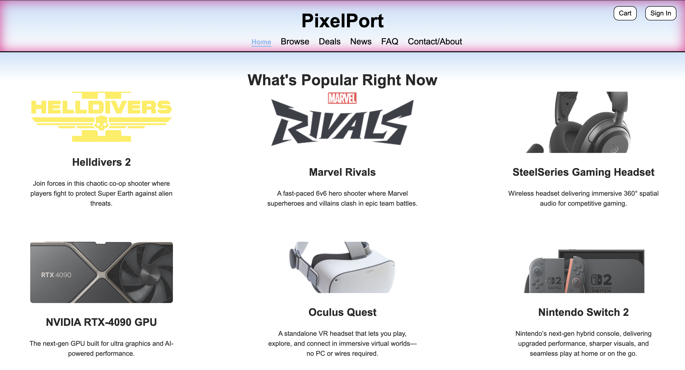
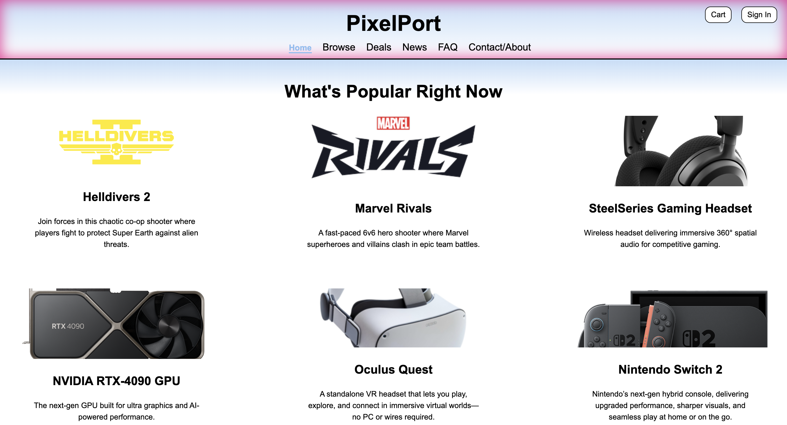
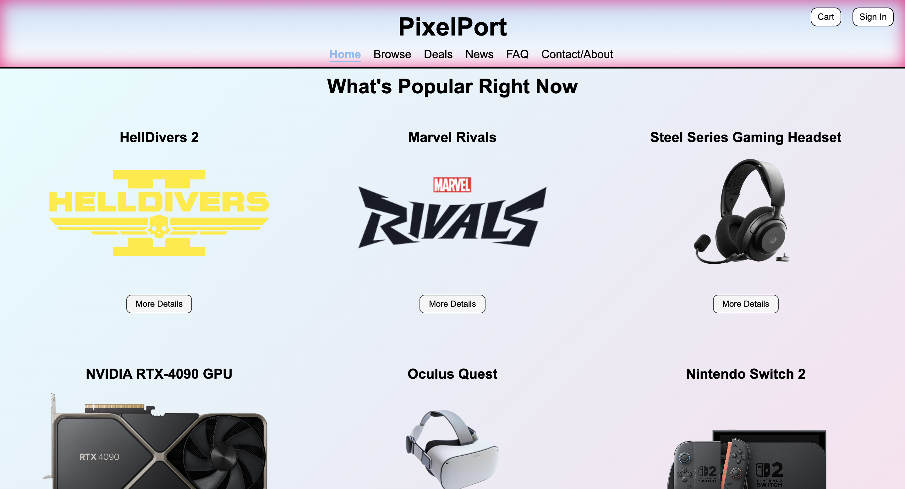
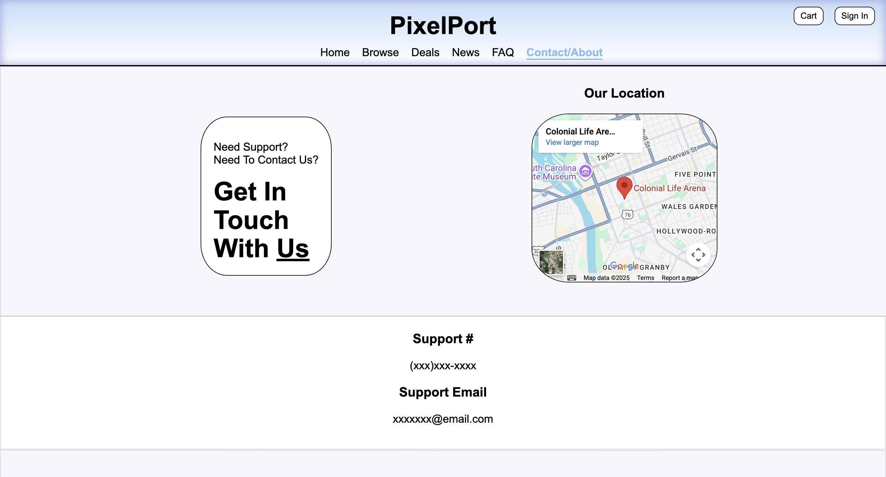
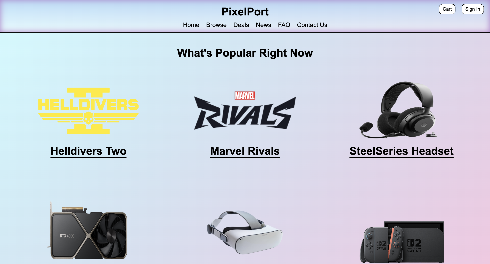

CSCE 242: Web-Applications
Talan Kinard
Class Description
CSCE 242 is a class based on the development of Web Applications through the usage of HTML, CSS, and JavaScript.
My Github
https://github.com/talankinard/talankinard.github.io/
Assignments
Assignment 1 - Basic HTML

Basic HTML assignment where I created a basic webpage on the NFL with a list, headings, and a table.
Assignment 2 - Basic CSS

Basic CSS, created another basic webpage about Spider-Man but this time I incorporated some basic CSS.
Assignment 3 - Page Layout

For page layout I created a webpage but this time using flex and creating a navigation menu.
Assignment 4 - Recreate CSS

Recreate CSS, I recreated The University of South Carolina's McCausland College's main page.
Assignment 5 - JavaScript Intro

JavaScript intro, for this I created a webpage implementing javascript to do three different tasks with user interaction.
Assignment 6 - JavaScript Conditionals
JavaScript conditionals, for this I was tasked to create a plant that changes on values and a functioning clock.
Assignment 7 - JavaScript Loops
JavaScript loops, I used loops in JavaScript to create a scene when a button is clicked and reference either sun or moon depending on the time.
Assignment 8 - JavaScript Arrays
JavaScript arrays, I used two arrays to store before/after and added a hover name of the house based off the stored array name and a popout.
Assignment 9 - JavaScript Classes
JavaScript classes, using an array to store data from five artworks I was able to toggle and untoggle a popup menu displaying the image and artist.
Assignment 10 - Server Hello World!
For Assignment 10 I set up a new repo for this new server and printed Hello World using node and render.
Projects
Project Part 1 - Topic

Part 1, for part one I simply chose a topic, name, gave a description, page names, and what would be stored.
Project Part 2 - Wireframes

Part 2, for this I created wireframes represnting a skeleton of my website and all its pages.
Project Part 3 - Java & CSS

Part 3, for this I created the code and skeleton pages for my website.
Project Part 4 - Website Design & Coloring
Part 4, for this I created the colors and designs for my website.
Project Part 5 - Website Design Improvements
Part 5, I improved my website off of peer and instructor feedback.
Project Part 6 - Website JSON File Parsing
Part 6, I wrote a json file of data to store, then parsed it to the website using javascript.
Project Part 7 - Website Contact Form and Map
Part 7, I created a submittable contact form and a map location using IFrame.
Project Part 8 - Website React Transfer
React Parts, added the json reading for homepage, a slideshow, and working contact form in react.